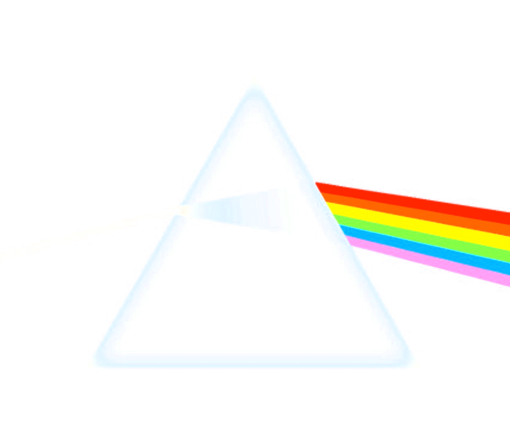

Words
Words
Notes, Questions, Ideas
"Why KeyKOS is fascinating"
 Software
Software
Github: Profile, Repositories
Gitlab: Profile, Repositories
 Virtual Machines
Virtual Machines
esolangs.org/wiki/KeyVM
esolangs.org/wiki/RarVM
RarVM on the Web, via PyIodide
Websites
Iceberg Chart Creator:
icebergcharts.com
Resource Limited Chess: rlc-chess.com
Aesthetics Rater: aesort.com
Latent Space Explorer: MysteryPark.net
Database of every smell (wip): EverySmell.com
Visualizations
Wikipedia: wikiscape.org
Math: 2+2=4
Astronomy: astroheat,
Map of observatories with an MPC code (thanks to Project Pluto),
astronomy.stackexchange posts
Treemaps:
Germans by occupation
(deutsch),
US-Americans by occupation,
occupation examples in ISCO-08,
products as categorized by TARIC
 Shenanigans
Shenanigans
Abalone
Multiclicker
Qewasd.com Clicker
Point of no Return
Self destroying game
Free Attention
SoundClot.com
Train